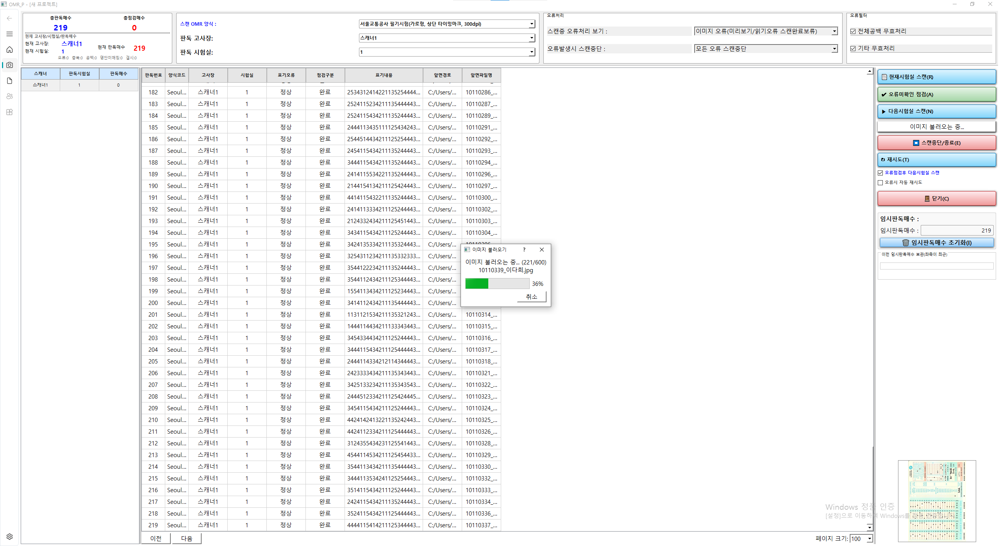
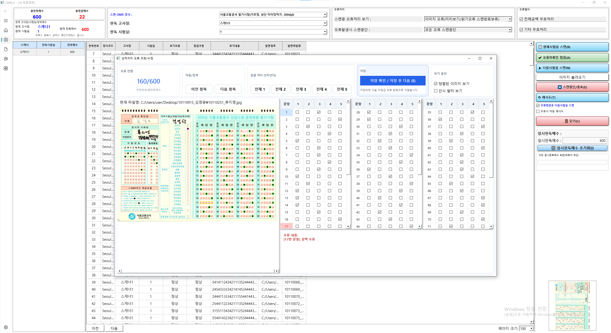
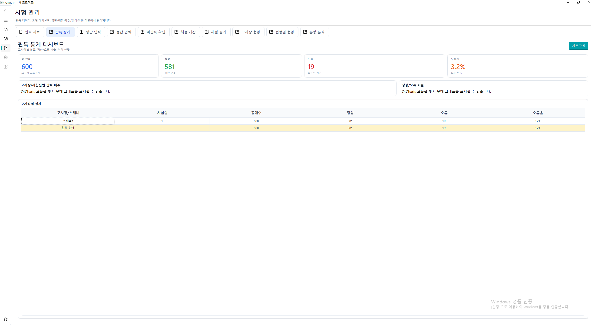

프로젝트 정의
스캔 이미지 분석과 결과 저장
판독 엔진과 데스크톱 UI를 연결해 실제 운영 흐름에 맞는 도구 형태로 구현했다.
Project Definition
01
NAVER WORKS 서비스 기획/운영 지원 포지셔닝
OMR 판독 프로그램을 만들었지만, 포트폴리오의 핵심은 결과 확인과 오류 수정 경험 설계다. 사용자가 무엇을 다시 봐야 하는지, 어디서 수정해야 하는지, 수정 후 무엇이 달라지는지가 바로 이해되도록 구조를 정리했다.
프로젝트 정의
판독 엔진과 데스크톱 UI를 연결해 실제 운영 흐름에 맞는 도구 형태로 구현했다.
핵심 문제
재검토 대상 식별, 수정 판단, 상태 반영이 바로 읽히지 않으면 운영 단계에서 다시 시간이 든다.
보여주려는 역량
기능 구현보다 먼저, 무엇을 구분하고 무엇을 다시 보게 할지 정하는 역할에 집중했다.
Problem Definition
02
판독이 되기만 해서는 충분하지 않다. 실제 사용자는 결과가 나온 뒤 재검토 대상을 찾고, 오류 이유를 이해하고, 수정 이후 상태를 다시 확인해야 한다.
문제 1
정상 건과 다시 봐야 하는 건이 바로 나뉘지 않으면 확인 비용이 커진다.
문제 2
오류 메시지가 있어도 무엇을 다시 확인해야 하는지 곧바로 알기 어렵다.
문제 3
완료 여부와 수동 수정 기록이 분리되지 않으면 같은 작업이 반복된다.

My Decision
03
이 프로젝트에서 중요한 일은 화면을 많이 만드는 것이 아니라, 무엇을 구분하고 무엇을 다시 보게 할지 기준을 정하는 일이었다.
기준 1
판독 오류와 검토 완료는 다른 판단이다. 같은 값으로 처리하지 않고 다른 상태로 관리했다.
기준 2
전체 결과를 반복해 훑지 않도록, 다시 볼 필요가 있는 건을 별도 흐름으로 다뤘다.
기준 3
한 번 고친 결과가 끝이 아니라, 이후에도 확인 가능한 이력으로 남도록 설계했다.
직접 다룬 범위
Before → After
04
핵심은 오류를 없애는 것이 아니라, 오류가 생겼을 때 사용자가 덜 막히도록 흐름을 바꾸는 일이었다.

Outcome
05
외부 성과 수치를 제시할 수 있는 작업은 아니었다. 대신 운영 가능한 구조가 남은 점이 이 프로젝트의 결과다.
결과 1
전체 목록 반복 확인 대신, 다시 볼 필요가 있는 건을 별도 흐름으로 다뤘다.
결과 2
정상 여부와 검토 완료 여부를 분리해 현재 상태를 더 쉽게 읽게 했다.
결과 3
수정 내용을 기록으로 남기고, 이후 다시 확인 가능한 구조로 정리했다.
다음 단계에서 검증할 요소

Role Fit
06
나는 기능 추가보다 먼저 사용자의 다음 행동을 분명하게 만드는 문제에 강점이 있다.
기여 1
처음 쓰는 사람도 현재 상태와 다음 행동을 이해하게 만드는 화면 구조에 기여할 수 있다.
기여 2
목록, 상태, 예외 항목을 한눈에 읽는 관리 화면을 설계하는 데 강점이 있다.
기여 3
오류 기준을 문서로 정리하고, 반복 문의를 줄이는 지원 흐름 설계로 이어질 수 있다.
기억할 한 문장